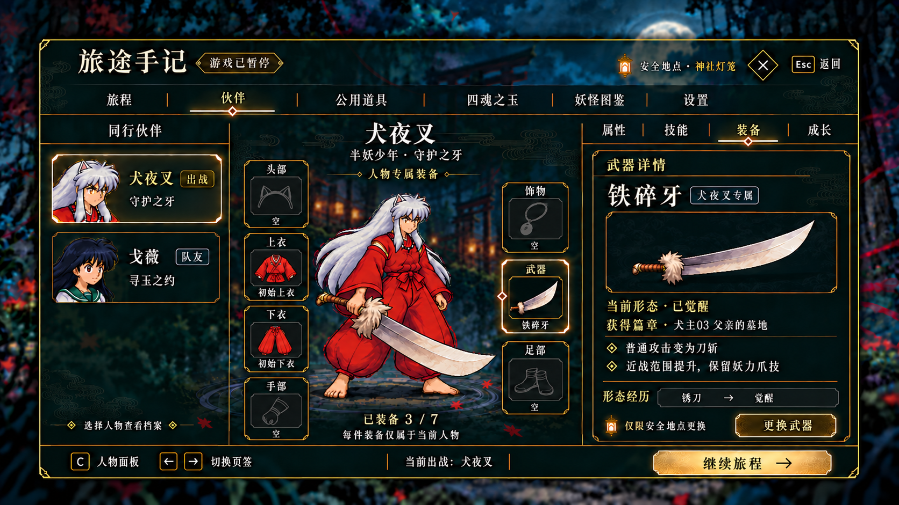
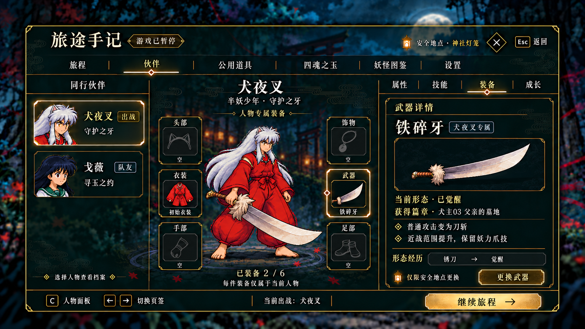
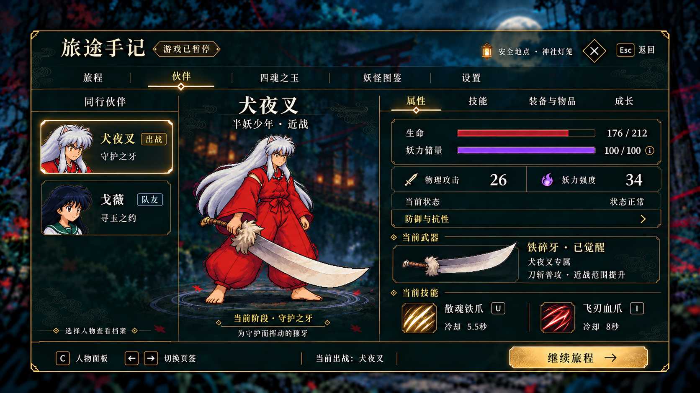
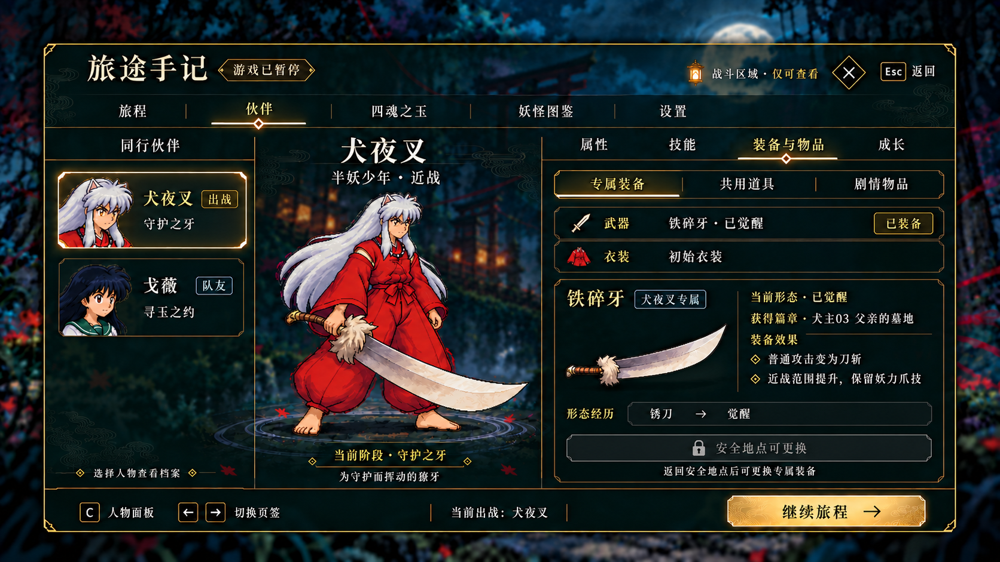

人物面板 · 上下衣装备版
公用道具独立入口 · 上衣与下衣独立装备 · 安全地点更换

人物周围共七格，初始上下衣分别显示图标，示意统计为已装备3／7；专属归属、安全地点换装和公共道具入口沿用上一版。查看最新原图 ↗

六个部位格围绕人物，选中后右侧查看详情；空位显示轮廓。安全地点可进入对应部位的更换清单，战斗区域锁定。部位数量与初始衣装仍为设计提案。查看 v2 原图 ↗

生命176／212为排版示例；物理攻击26和妖力强度34沿用已有阶段配置。100／100为已确认的能量展示默认值。查看属性原图 ↗

锈刀到觉醒记录剧情经历；初始衣装仅作布局示意，未新增属性。安全处的更换清单将只显示该人物可用装备。查看装备原图 ↗